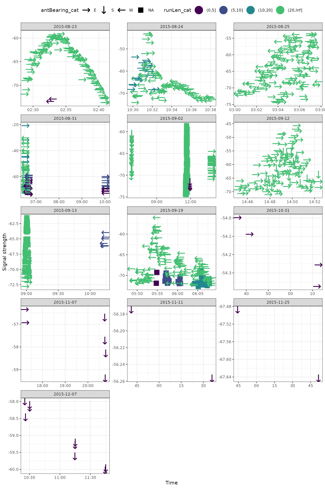
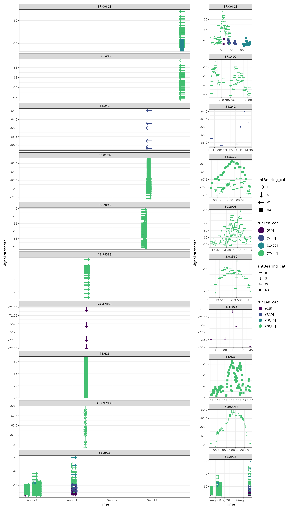
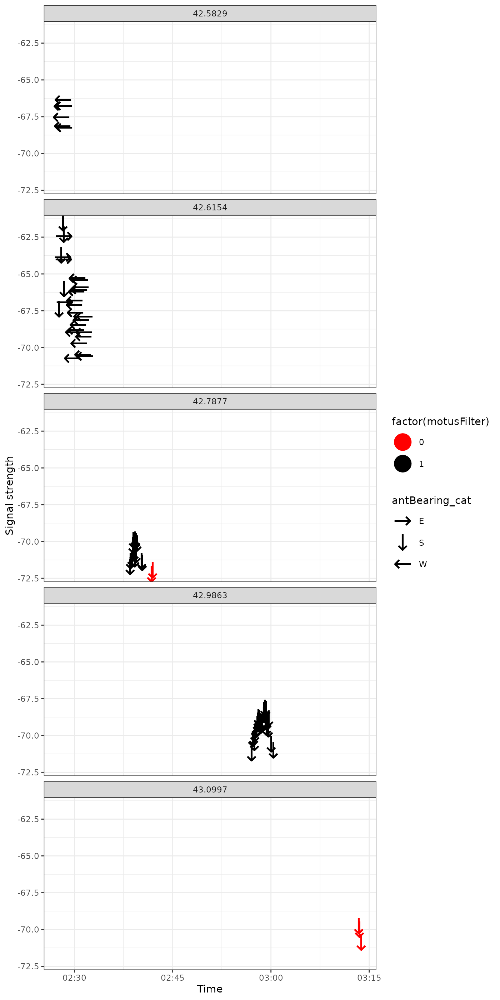

Plotting signal strength vs. time
Source:vignettes/articles/signal-strength.Rmd
signal-strength.RmdA common diagnostic plot used when exploring Motus data is a signal strength vs. time plot.
These plots look at how the value of signal strength
(sig) changes over time with each hit.
A couple of things to note:
- Here, each point represents a specific
hitIDfor, in this case,motusTagID24303 (a white-throated sparrow) - This curved pattern is characteristic of a bird flying by a specific receiver: The strength of the tag signal starts low but gets increasingly high as the bird approaches the receiver. As the bird passes by the signal strength starts to decline again.
These patterns can be useful for assessing what the bird is doing (flying through or migrating), as well as for assessing whether these hits are ‘real’ or whether they’re just noise.
Let’s use some data from the sample project 176 (username:
motus.sample; password: motus.sample) to look
a bit more at different ways we might use signal strength plots
library(motus)
library(tidyverse)
library(lubridate)
library(patchwork)
tags <- tagme(176, new = TRUE)Now let’s filter the data, and create some extra variables to help us out.
df_tags <- tbl(tags, "alltags") %>%
filter(!is.na(recvDeployLat)) %>% # Omit unknown receiver locations
collect() %>%
mutate(time = as_datetime(ts),
date = as_date(time),
ambig = if_else(!is.na(ambigID), "ambiguous tag", "okay tag"),
# Create antenna bearing category
antBearing_cat = case_when(antBearing > 315 & antBearing < 45 ~ "N",
antBearing < 135 ~ "E",
antBearing < 225 ~ "S",
antBearing < 315 ~ "W"),
# Create run length category
runLen_cat = cut(runLen, breaks = c(0, 5, 10, 20, Inf)),
# Create hour bin category
hourBin = hour(time))Exploring data
Basic plot
Here we look at a single id by date. We can see at least several examples of a fly by based on the time by signal strength.
ggplot(data = filter(df_tags, motusTagID == 16039), aes(x = time, y = sig)) +
geom_point() +
theme_bw() +
labs(x = "Time", y = "Signal strength") +
facet_wrap(~ date, scales = "free", ncol = 3)Creating these plots can yield a lot of information, especially if we start coding the symbols to help us out.
Adding runLen
A good starting point is to add in runLen (run lengths).
We can do this by ‘binning’ (categorizing) run lengths to catch short
runs.
ggplot(data = filter(df_tags, motusTagID == 16039),
aes(x = time, y = sig, colour = runLen_cat)) +
geom_point() +
theme_bw() +
theme(legend.position = "top") +
labs(x = "Time", y = "Signal strength") +
scale_colour_viridis_d(end = 0.7) +
facet_wrap(~ date, scales = "free", ncol = 3)Adding antenna bearings
Next we can add some information about antenna bearings (direction). Here we’ll use Unicode arrows to define general antenna directions.
ggplot(data = filter(df_tags, motusTagID == 16039),
aes(x = time, y = sig, colour = runLen_cat, shape = antBearing_cat)) +
geom_point(size = 8) +
theme_bw() +
theme(legend.position = "top") +
labs(x = "Time", y = "Signal strength") +
scale_colour_viridis_d(end = 0.7) +
scale_shape_manual(values = c("N" = "\u2191", "S" = "\u2193",
"E" = "\u2192", "W" = "\u2190"),
na.value = "\u25AA") +
facet_wrap(~ date, scales = "free", ncol = 3)
We can also look more carefully to get a better idea of what’s going on.
ggplot(data = filter(df_tags, motusTagID == 16039, date == "2015-08-31"),
aes(x = time, y = sig, colour = runLen_cat, shape = antBearing_cat)) +
geom_point(size = 8) +
theme_bw() +
labs(x = "Time", y = "Signal strength") +
scale_colour_viridis_d(end = 0.7) +
scale_shape_manual(values = c("N" = "\u2191", "S" = "\u2193",
"E" = "\u2192", "W" = "\u2190"),
na.value = "\u25AA") +
facet_wrap( ~ hourBin, scales = "free", ncol = 3)By receiver latitude
We can also look at these patterns by receiver latitude, which, while the scale obscures some of the small local patterns, shows a more clear global pattern over time.
In this case we see a steady northern direction in the early fall.
ggplot(data = filter(df_tags, motusTagID == 16039, date < "2015-10-01"),
aes(x = time, y = sig, colour = runLen_cat, shape = antBearing_cat)) +
geom_point(size = 8) +
theme_bw() +
labs(x = "Time", y = "Signal strength") +
scale_colour_viridis_d(end = 0.7) +
scale_shape_manual(values = c("N" = "\u2191", "S" = "\u2193",
"E" = "\u2192", "W" = "\u2190"),
na.value = "\u25AA") +
facet_wrap(~recvDeployLat, ncol = 1, scales = "free_y")
The best of both worlds is to use the patchwork package to compare figures.
g1 <- ggplot(data = filter(df_tags, motusTagID == 16039, date < "2015-10-01"),
aes(x = time, y = sig, colour = runLen_cat, shape = antBearing_cat)) +
geom_point(size = 8) +
theme_bw() +
labs(x = "Time", y = "Signal strength") +
scale_colour_viridis_d(end = 0.7) +
scale_shape_manual(values = c("N" = "\u2191", "S" = "\u2193",
"E" = "\u2192", "W" = "\u2190"),
na.value = "\u25AA") +
facet_wrap(~recvDeployLat, ncol = 1, scales = "free_y")
g2 <- ggplot(data = filter(df_tags, motusTagID == 16039, date < "2015-10-01"),
aes(x = time, y = sig, colour = runLen_cat, shape = antBearing_cat)) +
geom_point(size = 4) +
theme_bw() +
labs(x = "Time", y = "Signal strength") +
scale_colour_viridis_d(end = 0.7) +
scale_shape_manual(values = c("N" = "\u2191", "S" = "\u2193",
"E" = "\u2192", "W" = "\u2190"),
na.value = "\u25AA") +
facet_wrap(~recvDeployLat, ncol = 1, scales = "free")
g1 + g2 + plot_layout(widths = c(4, 1), guides = "collect")
Highlighting problems
An alternative feature that may help us identify problematic data is
to highlight hits that have been flagged by
motusFilter.
ggplot(data = filter(df_tags, motusTagID == "24298", date == "2017-05-18"),
aes(x = time, y = sig, colour = factor(motusFilter), shape = antBearing_cat)) +
geom_point(size = 8) +
theme_bw() +
labs(x = "Time", y = "Signal strength") +
scale_colour_manual(values = c("1" = "black", "0" = "red")) +
scale_shape_manual(values = c("N" = "\u2191", "S" = "\u2193",
"E" = "\u2192", "W" = "\u2190")) +
facet_wrap(~recvDeployLat, ncol = 1)
An alternative feature that may help us identify problematic data is to highlight hits that have been flagged as ambiguous tags.
Here we filter to only tags that have some ambiguity.
motus_id <- df_tags %>%
filter(!is.na(ambigID)) %>%
pull(motusTagID) %>%
unique()
df_ambig <- filter(df_tags, motusTagID %in% motus_id)
ggplot(data = filter(df_ambig, date < "2015-09-01"),
aes(x = time, y = sig, colour = ambig)) +
geom_point() +
theme_bw() +
labs(x = "Time", y = "Signal strength") +
scale_colour_manual(values = c("red", "black")) +
facet_wrap(~motusTagID, ncol = 1)
What Next? Explore all articles